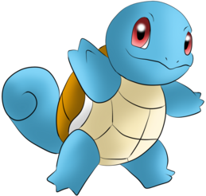
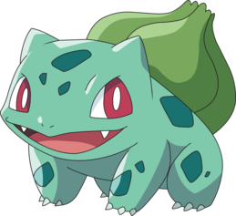

-
Pikachu
HP 300

Descrição
Os Pikachus são pequenos roedores de quarenta centímetros e de seis quilogramas, com um corpo redondo, pernas curtas e uma longa cauda, quando macho, a cauda tem um formato de um raio, mas se o Pikachu for fêmea sua cauda ganha um coração na ponta.
-
Charizard
HP 800

Descrição
Geralmente um Charizard é competitivo. Ele adora a batalha e seu espírito competitivo também é notável, uma vez que nunca vai cuspir fogo em um inimigo mais fraco a menos que provocado ou ordenado. Quando fica muito irritado, as chamas em sua cauda se tornam branco-azuladas.
-
Mewtwo
HP 1200

Descrição
Mewtwo foi criado geneticamente em um laboratório, sendo um clone do misterioso antigo Pokémon Mew. É uma criatura com uma postura humanóide, mas tem algumas características felinas.
-
Squirtle
HP 400
Descrição
Squirtle é um pequeno Pokémon azul-claro com uma aparência semelhante ao de uma tartaruga. Como tartarugas, Squirtle tem um escudo que cobre seu corpo com orifícios que permitem que seus membros, cauda e cabeça para ser exposto. Ao contrário de uma tartaruga Squirtle é normalmente bípede.
-
Bulbassauro
HP 600
Descrição
Bulbassauro é um pequeno Pokémon anfíbio quadrúpede de pele azul-esverdeada com manchas mais escuras. Tem olhos vermelhos com pupilas brancas, orelhas pontiagudas no topo de sua cabeça e um focinho curto e rombudo acima de sua larga boca. Possui em cada uma de suas pernas grossas três garras afiadas. Nas costas de Bulbassauro há um grande bulbo de planta verde, que é cultivado a partir de uma semente plantada em seu nascimento. O bulbo também esconde duas videiras semelhantes a tentáculos.